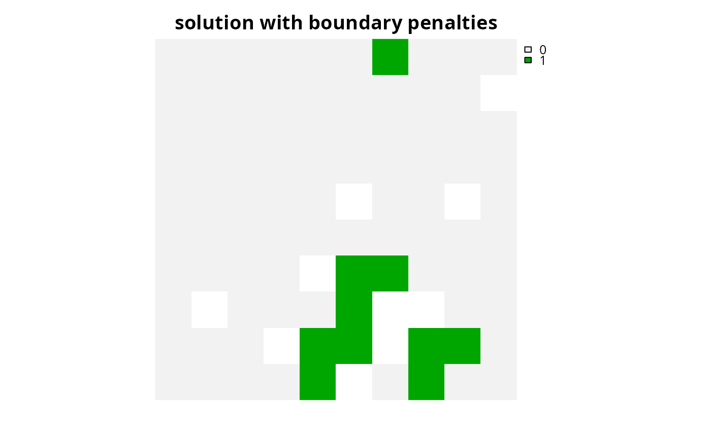
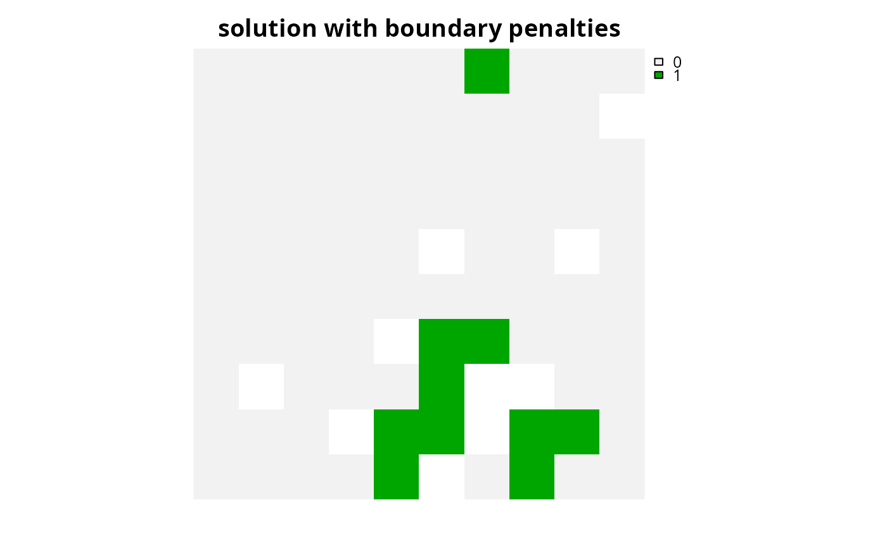

Specify that the CBC (COIN-OR branch and cut) software should be used to solve a conservation planning problem (Forrest & Lougee-Heimer 2005). This function can also be used to customize the behavior of the solver. It requires the rcbc package to be installed (only available on GitHub, see below for installation instructions).
Usage
add_cbc_solver(
x,
gap = 0.1,
time_limit = .Machine$integer.max,
presolve = TRUE,
threads = 1,
first_feasible = FALSE,
start_solution = NULL,
verbose = TRUE
)Arguments
- x
problem()object.- gap
numericgap to optimality. This gap is relative and expresses the acceptable deviance from the optimal objective. For example, a value of 0.01 will result in the solver stopping when it has found a solution within 1% of optimality. Additionally, a value of 0 will result in the solver stopping when it has found an optimal solution. The default value is 0.1 (i.e., 10% from optimality).- time_limit
numerictime limit (seconds) for generating solutions. The solver will return the current best solution when this time limit is exceeded. The default value is the largest integer value (i.e.,.Machine$integer.max), effectively meaning that solver will keep running until a solution within the optimality gap is found.- presolve
logicalattempt to simplify the problem before solving it? Defaults toTRUE.- threads
integernumber of threads to use for the optimization algorithm. The default value is 1.- first_feasible
logicalshould the first feasible solution be be returned? Iffirst_feasibleis set toTRUE, the solver will return the first solution it encounters that meets all the constraints, regardless of solution quality. Note that the first feasible solution is not an arbitrary solution, rather it is derived from the relaxed solution, and is therefore often reasonably close to optimality. Defaults toFALSE.- start_solution
NULLor object containing the starting solution for the solver. This is can be useful because specifying a starting solution can speed up the optimization process. Defaults toNULLsuch that no starting solution is used. To specify a starting solution, the argument tostart_solutionshould be in the same format as the planning units (i.e., aNULL,numeric,matrix,data.frame,terra::rast(), orsf::sf()object). See the Start solution format section for more information.- verbose
logicalshould information be printed while solving optimization problems? Defaults toTRUE.
Value
An updated problem() object with the solver added to it.
Details
CBC is an
open-source mixed integer programming solver that is part of the
Computational Infrastructure for Operations Research (COIN-OR) project.
This solver seems to have much better performance than the other open-source
solvers (i.e., add_highs_solver(), add_rsymphony_solver(),
add_lpsymphony_solver())
(see the Solver benchmarks vignette for details).
As such, it is strongly recommended to use this solver if the Gurobi and
IBM CPLEX solvers are not available.
Installation
The rcbc package is required to use this solver. Since the rcbc package is not available on the the Comprehensive R Archive Network (CRAN), it must be installed from its GitHub repository. To install the rcbc package, please use the following code:
Note that you may also need to install several dependencies – such as the Rtools software or system libraries – prior to installing the rcbc package. For further details on installing this package, please consult the online package documentation.
Start solution format
Broadly speaking, the argument to start_solution must be in the same
format as the planning unit data in the argument to x.
Further details on the correct format are listed separately
for each of the different planning unit data formats:
xhasnumericplanning unitsThe argument to
start_solutionmust be anumericvector with each element corresponding to a different planning unit. It should have the same number of planning units as those in the argument tox. Additionally, any planning units missing cost (NA) values should also have missing (NA) values in the argument tostart_solution.xhasmatrixplanning unitsThe argument to
start_solutionmust be amatrixvector with each row corresponding to a different planning unit, and each column correspond to a different management zone. It should have the same number of planning units and zones as those in the argument tox. Additionally, any planning units missing cost (NA) values for a particular zone should also have a missing (NA) values in the argument tostart_solution.xhasterra::rast()planning unitsThe argument to
start_solutionbe aterra::rast()object where different grid cells (pixels) correspond to different planning units and layers correspond to a different management zones. It should have the same dimensionality (rows, columns, layers), resolution, extent, and coordinate reference system as the planning units in the argument tox. Additionally, any planning units missing cost (NA) values for a particular zone should also have missing (NA) values in the argument tostart_solution.xhasdata.frameplanning unitsThe argument to
start_solutionmust be adata.framewith each column corresponding to a different zone, each row corresponding to a different planning unit, and cell values corresponding to the solution value. This means that if adata.frameobject containing the solution also contains additional columns, then these columns will need to be subsetted prior to using this function (see below for example withsf::sf()data). Additionally, any planning units missing cost (NA) values for a particular zone should also have missing (NA) values in the argument tostart_solution.xhassf::sf()planning unitsThe argument to
start_solutionmust be asf::sf()object with each column corresponding to a different zone, each row corresponding to a different planning unit, and cell values corresponding to the solution value. This means that if thesf::sf()object containing the solution also contains additional columns, then these columns will need to be subsetted prior to using this function (see below for example). Additionally, the argument tostart_solutionmust also have the same coordinate reference system as the planning unit data. Furthermore, any planning units missing cost (NA) values for a particular zone should also have missing (NA) values in the argument tostart_solution.
References
Forrest J and Lougee-Heimer R (2005) CBC User Guide. In Emerging theory, Methods, and Applications (pp. 257–277). INFORMS, Catonsville, MD. doi:10.1287/educ.1053.0020 .
See also
Other solvers:
add_cplex_solver(),
add_default_solver(),
add_gurobi_solver(),
add_highs_solver(),
add_lsymphony_solver,
add_rsymphony_solver()
Examples
# \dontrun{
# load data
sim_pu_raster <- get_sim_pu_raster()
sim_features <- get_sim_features()
# create problem
p1 <-
problem(sim_pu_raster, sim_features) %>%
add_min_set_objective() %>%
add_relative_targets(0.1) %>%
add_binary_decisions() %>%
add_cbc_solver(gap = 0, verbose = FALSE)
# generate solution %>%
s1 <- solve(p1)
# plot solution
plot(s1, main = "solution", axes = FALSE)
 # create a similar problem with boundary length penalties and
# specify the solution from the previous run as a starting solution
p2 <-
problem(sim_pu_raster, sim_features) %>%
add_min_set_objective() %>%
add_relative_targets(0.1) %>%
add_boundary_penalties(10) %>%
add_binary_decisions() %>%
add_cbc_solver(gap = 0, start_solution = s1, verbose = FALSE)
# generate solution
s2 <- solve(p2)
# plot solution
plot(s2, main = "solution with boundary penalties", axes = FALSE)

# }
# create a similar problem with boundary length penalties and
# specify the solution from the previous run as a starting solution
p2 <-
problem(sim_pu_raster, sim_features) %>%
add_min_set_objective() %>%
add_relative_targets(0.1) %>%
add_boundary_penalties(10) %>%
add_binary_decisions() %>%
add_cbc_solver(gap = 0, start_solution = s1, verbose = FALSE)
# generate solution
s2 <- solve(p2)
# plot solution
plot(s2, main = "solution with boundary penalties", axes = FALSE)

# }